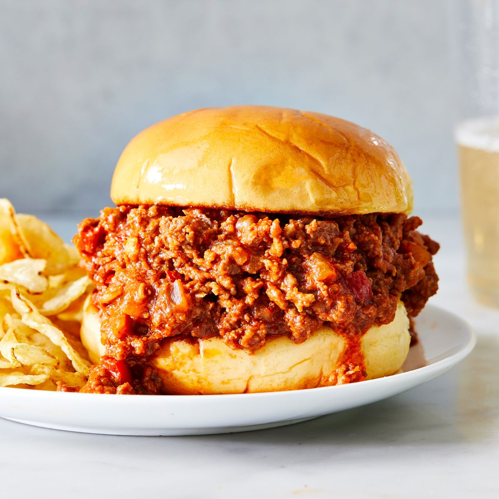

Sloppy Joes

Description
When the craving for a reliable, nostalgic, easy (and cheap) weeknight
dinner hits, there’s no debate: A sloppy Joes’ night is in order.
The perfect answer to, “How far can I stretch this package of
ground beef?” sloppy Joes only require a handful of simple
ingredients (that you most likely already have on hand) to create a
classic family dinner. Our tried-and-tested recipe uses the
unstoppable sloppy Joes trio—ground beef, tomato flavors, and
onion—to create a flavor-packed meal that’s for way more than just
sandwiches.
Ingredients
- 1 tbsp. extra-virgin olive oil
- 1 medium yellow onion, chopped
- 1 red bell pepper, seeds and ribs removed, chopped
- 1/2 c.ketchup
- 2cloves garlic, finely chopped
- 1 tbsp.chili powder
- 2 tbsp. apple cider vinegar
- 2 tbsp. yellow mustard
- 1 tbsp. brown sugar
- 1 tbsp. Worcestershire sauce
- Kosher salt
- Freshly ground black pepper
- 1 lb. ground beef
- 1 c.canned tomato sauce
- 6 hamburger buns, toasted
Steps
- In a large skillet over medium-high heat, heat oil.
Cook onion and bell pepper, stirring occasionally,
until softened and slightly golden, 10 to 15 minutes
- Add ketchup and cook, stirring occasionally,
until color has darkened and ketchup is reduced
to a thick paste, 7 to 10 minutes.
- Add garlic and chili powder and cook,
stirring, until fragrant, about 1 minute.
Add vinegar, mustard, brown sugar, and Worcestershire sauce;
season with salt and pepper. Cook, stirring frequently,
until incorporated, about 1 minute more.
- Increase heat to high and add ground beef.
Using a fork, break apart beef until separated and no
big lumps remain. Cook, stirring frequently,
until browned, about 5 minutes.
- Add tomato sauce and bring to a boil, stirring to combine.
Let cool slightly; season with salt, if needed.
- Divide beef mixture among buns and serve.
Home